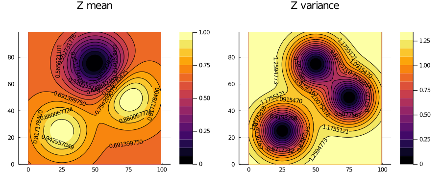

Overview
In many fields of science, such as mining engineering, hydrogeology, petroleum engineering, and environmental sciences, traditional statistical theories fail to provide unbiased estimates of resources due to the presence of spatial correlation. Geostatistics (a.k.a. spatial statistics) is the branch of statistics developed to overcome this limitation. Particularly, it is the branch that takes spatial coordinates of data into account.
GeoStats.jl is an attempt to bring together bleeding-edge research in the geostatistics community into a comprehensive framework for spatial statistics, as well as to empower researchers and practioners with a toolkit for fast assessment of different modeling approaches.
The design of this project is the result of many years developing geostatistical software. I hope that it can serve to promote more collaboration between geostatisticians around the globe and to standardize this incredible science. If you would like to help support the project, please star the repository on GitHub and share it with your colleagues. If you are a developer, please check the developer guide.
Installation
Get the latest stable release with Julia's package manager:
] add GeoStatsQuick example
Below is a simple example of geostatistical estimation:
using GeoStats
using Plots
# list of properties with coordinates
props = OrderedDict(:prop => [1.,0.,1.])
coord = [(25.,25.),(50.,75.),(75.,50.)]
# define spatial data
sdata = PointSetData(props, coord)
# define spatial domain (e.g. regular grid, point set)
sdomain = RegularGrid{Float64}(100, 100)
# define estimation problem for any data column(s) (e.g. :precipitation)
problem = EstimationProblem(sdata, sdomain, :prop)
# choose a solver from the list of solvers
solver = Kriging(
:prop => (variogram=GaussianVariogram(range=35.),)
)
# solve the problem
solution = solve(problem, solver)
# plot the solution
contourf(solution, clabels=true)
For more examples, please see the Tutorials section of the documentation.
Project organization
The project is split into various packages:
| Package | Description |
|---|---|
| GeoStats.jl | Main package reexporting full stack of packages for geostatistics. |
| Variography.jl | Variogram estimation and modeling, and related tools. |
| KrigingEstimators.jl | High-performance implementations of Kriging estimators. |
| PointPatterns.jl | Spatial point pattern analysis and synthesis. |
| GeoStatsImages.jl | Training images for multiple-point geostatistical simulation. |
| GslibIO.jl | Utilities to read/write extended GSLIB files. |
| GeoStatsBase.jl | Base package containing problem and solution specifications (for developers). |
The main GeoStats.jl package reexports the full stack of packages for high-performance geostatistics in Julia. Other packages like GeoStatsImages.jl can be installed for additional functionality. Besides the packages above, the project is extended via solver packages. These solvers are implemented independently of the main package for different geostatistical problems.